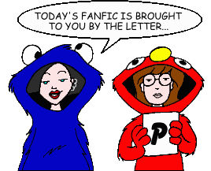
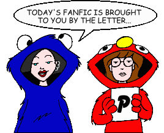

Fan Fiction
"P" by Title

Fan Fiction
"P" by Title

|
Authors: If you no longer wish for any of your stories to be posted, please send e-mail to fanfic@lawndale.net and I will remove them at once. |
| P.roblem With E.xercising By Bobby Birks Category: School Situations Daria, Jane, Brittany, and Kevin are all assigned to a makeup gym class with a brute of a teacher. |
| The Pact By Richard Lobinske Category: Sci-Fi, Fantasy & Horror Entry for the author's own PPMB Iron Chef, based on fan artwork of Daria as Taarna the Defender from the movie "Heavy Metal." When Ms. Li appears at a pep rally with a strange, green pendant, Daria knows that evil is afoot and she's the only one who can stop it. |
| Padded Room of Terror By Mike Quinn Category: Holidays A faux Halloween episode that thrusts Daria and Jane into three wacky tales, including takeoffs of the "Child's Play" movies and "Star Trek: Voyager," in a homage to the annual Halloween episodes of "The Simpsons." |
| Padded Walls By Angelinhel Category: Miscellaneous Ever wonder why Quinn can't remember Jaime's name? Why she *really* started calling Daria her cousin? Why Tiffany is so slow? Stacy so suggestible? Or the truth behind why Quinn loves to have guys at her feet? |
| Padded Walls 2 By Angelinhel Category: Miscellaneous Daria hits her head in the "Boxing Daria" car accident, instead of just skidding to the side of the road, and when she comes to, things have changed. A PPMB "Iron Chef" challenge fanfic, and a sequel to the author's "Padded Walls" fanfic. |
| Pander Bare (*) By The Angst Guy Category: Miscellaneous Daria mulls a career path as a nude exotic dancer. Seriously. |
| Panzerfibbed (*) By Nick Gaston Category: Miscellaneous Mystik Spiral's desperate journey to a music festival in Reno becomes a test of nerves, steel, and a dilapidated box-van. Possibly the most evil "songfic" ever written, for reasons that become all too clear. |
| Paper Cuts By Cedric Robert Category: School Situations Daria accepts a position on the school newspaper, at Jodie's request, and uncovers a conspiracy involving possibly Mack and the football team. |
| Parental Injustice By Thomas Mikkelsen Category: Miscellaneous Fun in family court, as both Quinn and Daria are railroaded into punishments by a win-at-any-cost Helen. Will Daria stand for this injustice? |
| The Passion Club [Artwork] By Gystex Category: Miscellaneous Fed up with their ongoing rivalry and constant one-upmanship, Quinn attempts to bond with Sandi in an attempt to form a true friendship, but gets a LOT more than she bargained for. (This is the PG-13 version of the story.) Note: This story includes content (language, violence, or sexual situations) that may not be appropriate for some readers. |
| Passout-over By Emily Bischoff Category: Romance Weird stuff occurs when Daria stays over at Jane's house and Trent brings the booze... |
| Past and Future Daria By Thomas Mikkelsen Category: Miscellaneous The students of Lawndale imagine life in the past... with one exception. |
| Past Understanding By Ennon Category: Miscellaneous Quinn's last minute present reaps disaster for Jake and the Morgendorrfers, but can Daria and her allies save him in spite of forces counting on their doom? Also, Quinn gets a taste of being switched to the bottom of the food chain. Crossovers "Beavis and Butt-head" and "Kukla, Fran and Ollie" included. |
| The Path Less Trodden By Dante Tremere Category: Past & Future A letter to Jane from Daria in the future. |
| A Path of Roses and Thorns By Brother Grimace Category: Series & Multi-Part Stories (Past & Future) Daria's Aunt Amy is getting married! Told in flashback from the wedding day itself, it's the story of how Aunt Amy managed to get on that bumpy road to the altar! Set in the universe of Richard Lobinske's "Falling Into College" series. |
| Patty Cake, Patty Cake, Bakers Damned By Naomi Category: School Situations Daria and Jane have to prepare for a bakesale. They drag Trent and Jesse into it. |
| Pause in the Air By The Angst Guy Category: Series & Multi-Part Stories (Romance) Explores the lives of Daria and Jane as they set out for college and beyond... as a lesbian couple. |
| Payback Is a Beach By Pseud O'Nym Category: Miscellaneous Stacy, Sandi and Tiffany seek revenge after being outflirted by Quinn during a weekend at the beach. |
| Paying For It By Greystar Category: Miscellaneous Jane will do almost anything to pay for college, but she's not the only one! A PPMB "Iron Chef" contest entry. |
| Peer Pressure By Anonymous Category: Miscellaneous The Fashion Club hangs out with the new neighborhood dopeman. |
| Pencil-Necked Geeks By Petrel Category: Miscellaneous Daria is drafted into passing out pencils for Jake's run for school board, while Quinn plays tutor to Sandi, whose sudden sickness coincides with the arrival of a new girl at school. |
| Penny for Your Virus By Bingo Hanis Category: Miscellaneous Penny returns home from Costa Rica with a nasty virus, which soon spreads to just about everyone in town. |
| Pet Food By Brother Grimace Category: Miscellaneous A heartbreaking AU fic about my favorite character in the "Falling Into College" post-canon series. |
| A Pet for Quinn By Deref Category: Miscellaneous Quinn gets a pet. The word "unusual" only begins to describe it. |
| The Pet By Brianna Aisling Category: Miscellaneous Two ficlets about unusual pets. (Warning: the first one is not for the squeamish...) |
| Phantasmagorier [Artwork] By Brian Taylor Category: Crossovers & Parodies What do an eerie mortuary, cannibalistic dwarves, and psychic visions of a Tall Man add up to? Plenty of trouble for Lawndale's most cynical teenagers in this spine-chilling parody of the "Phantasm" films. (UPDATED) Note: This story includes content (language, violence, or sexual situations) that may not be appropriate for some readers. |
| The Physics of Drowning By fatora Category: School Situations Daria and Jane have to make a boat. |
| Piano Practice By Brother Grimace Category: Miscellaneous At the Taylor house one afternoon, a strange visitor expresses how much she likes the "High School Musical" films. |
| The Picture of Daria's Rear By Galen Hardesty Category: Miscellaneous Jane needs to earn tuition money for BFAC. Daria wants to help her. What will she do to help her friend? |
| Pieces of the Rainbow By Shinai Category: Miscellaneous The Morgendorffers return to the Retreat at Quiet Ivy and learn even more about themselves and each other. |
| Pigskin Caduceus By Matthew McGeehin Category: Miscellaneous Determined to win Quinn's heart for his own, Jeffy decides to learn biology and tutor Quinn once he discovers she struggles with the subject. In doing so, however, he discovers a hidden competence and intellectualism never thought possible. Brains are not popular in Lawndale, so Jeffy must keep his own gifts a secret while still trying to impress Quinn, as well as dealing with his own personal issues, as well as those involving his two closest buddies, Joey and Jamie. |
| Pinchsitter II By Chuckie Finster Category: Crossovers & Parodies A reworking of the episode "Pinch Sitter," only instead of the Guptys, Daria is babysitting the kids from "Rugrats." |
| Please By blah blah Category: Miscellaneous Jane tries to recreate a really stupid incident that happened at the Zen. |
| The Pledge of Allegiance, Daria Style By Ronin Category: Miscellaneous What if the U.S. Pledge of Allegiance was set in the Dariaverse? |
| Pluck'd a White Rose By Dennis Category: Romance A different kind of Daria/Tom shipper. How different, you ask? Well, for one thing, it's set more than 500 years before the show. |
| Poem #1: Lament for Jane Lane By Bacner Category: Miscellaneous A poem of Jane and Tom (post "Dye!"), told from Jane's point of view. |
| Poem #2: Tom's Poem of Jane By Bacner Category: Miscellaneous A poem of Jane and Tom (post "Dye!"), told from Tom's point of view. |
| Poetic Injustice By Mahna Mahna Category: Miscellaneous Poor Stacy... always taken advantage of... but none of us could have ever seen this coming. |
| Politics and Other Tricks By Eric Noss Category: School Situations Jodie, Brittany, and Kevin face off for sophomore class president, a student teacher takes over for Mr. O'Neill, and Daria and Jane meet the guy who's really in charge of the school system. |
| Polly Andry Rides Again (*) By The Angst Guy Category: Miscellaneous Jeffy, Joey, or Jamie? Quinn can't make up her mind which boy she wants to be with, so she picks... all of them! A PPMB Iron Chef short story. |
| Poor Pathetic Planet By Timothy Shanahan Category: Crossovers & Parodies A parody of the TV series "Captain Planet." |
| Pop Goes the Weasel By Candi Gliniecki Category: Miscellaneous Mystik Spiral gets the opportunity to have a record deal with a "big professional label." Meanwhile, Quinn runs for Fashion Club president. |
| Possess Me By Tamzin Buchan and Catherine Desimer Category: School Situations Daria is made to see a school counselor when she writes a disturbing poem. Meanwhile, Kevin and Brittany think that Trent is possessed. |
| Potential (*) By The Angst Guy Category: Past & Future Quinn Morgendorffer meets the man of her dreams, but the potential for nightmares is there, too, in this post-"Is It College Yet?" continuation of the second-season episode "That Was Then, This Is Dumb." |
| Power Behind the Pantsuit By Queen Jossie Category: School Situations Ms. Li finally goes too far when planning a school event, and ends up putting her job and all of Lawndale High at stake. |
| Power Rangers: Lawndale Force By Cyke Category: Series & Multi-Part Stories (Crossovers & Parodies) In this crossover series, five teenagers from Lawndale have been chosen as the heirs to incredible powers. Their task: nothing less than the protection of the entire planet. |
| Prayers for a SAINT [Artwork] (*) By The Angst Guy Category: Sci-Fi, Fantasy & Horror Amy Barksdale takes her favorite niece out to celebrate the publication of a Melody Powers story--and tells her a story of her own. |
| Prepare for Bore By DW Death Category: Miscellaneous The Lawndale perspective on the 9/11 terrorist attacks. This story has a happy ending; we can only hope that life imitates art. |
| Present Moment By Crusading_Saint Category: Miscellaneous All Mack wants is to get a birthday present for Jodie. Why does life not seem to want to help him? |
| Priceless By Ms. Hand Category: Miscellaneous A family crisis throws a wrench into Daria's plans for the future. |
| The Princess Daria Diaries By Jessica S. Category: Crossovers & Parodies Daria finds out that she is really a princess, which forces her to make a choice: be a princess and move out of Lawndale, or remain a Morgendorffer and stay with her family. |
| Prisoner of Hope (*) By The Angst Guy Category: Miscellaneous Daria's sole fan from childhood is reunited with her heroine, only to learn a bitter lesson in this continuation of the fifth-season episode "Camp Fear." |
| Pristine (*) By The Angst Guy Category: Miscellaneous Tom discovers that his ex-girlfriend Daria has gotten a new car--but he has forgotten that old saying about curiosity and cats. |
| The Prom By Jeff Cuscutis Category: School Situations Daria goes to the Prom. Set during her senior year. Some sisterly bonding. |
| Promise in Green By Richard Lobinske Category: Miscellaneous It's prom season for the seniors of Lawndale High School. Despite her and Tom's initial disinterest, Daria gets talked into agreeing to go. After finding a green dress online that's available locally, Daria finds herself oddly looking forward to the event. |
| Promises By Mike Bottos Category: Miscellaneous An offhand comment by Daria forces Helen to take a really close look at her life, and to do some serious re-evaluating. |
| Psycho Sis By Renfield Category: Miscellaneous A mental breakdown and a suicide attempt leads to Helen visiting her daughter in the hospital... again. |
| Psychoed By Thomas Mikkelsen Category: Miscellaneous One misunderstanding after another causes Jake to believe that Daria and Quinn are after his life. |
| Purple Eyes and Other Interesting Anomalies By Alexander Lamar Eldritch Category: Miscellaneous An essay that explains the bizzare characteristics of the characters in the author's stories. |
| Put Your Best Chain Forward By Chrystin Angel Category: Romance Jane and Tom realize that Trent and Daria like each other, so they chain them together for a total of one week and four days. |
| The Puzzle By Parker-man Category: Miscellaneous Strange things can happen when no one is watching... |